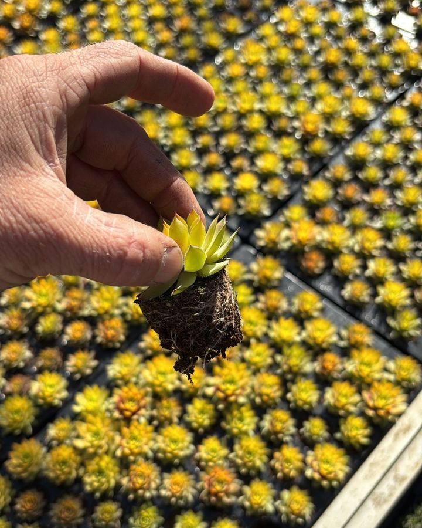
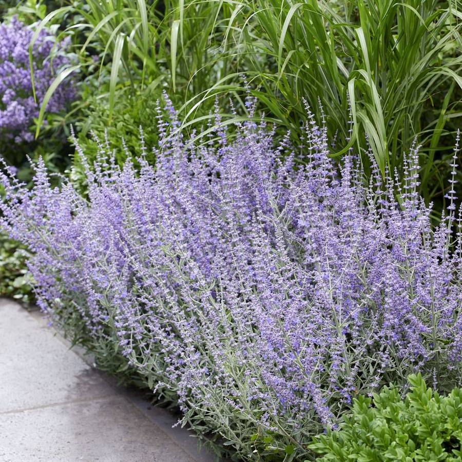
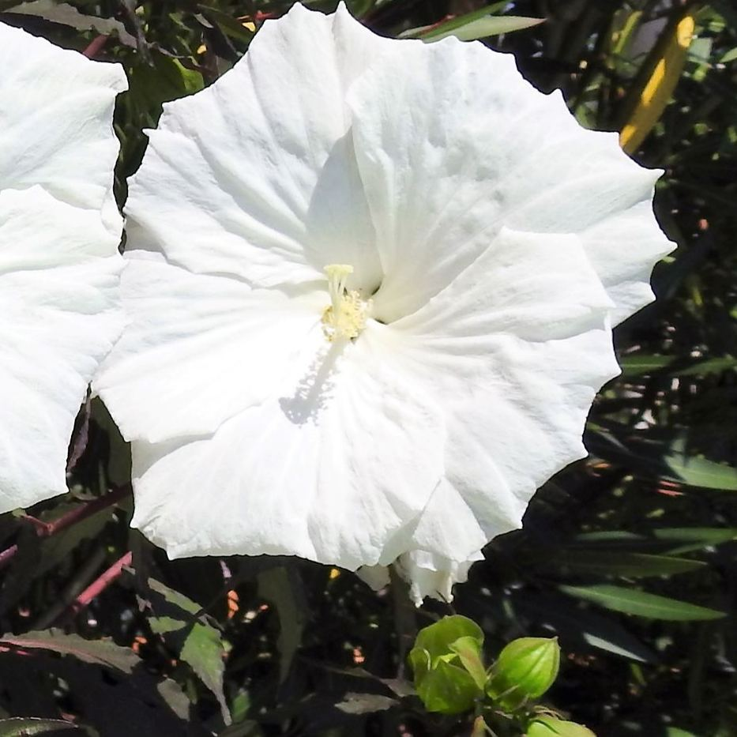
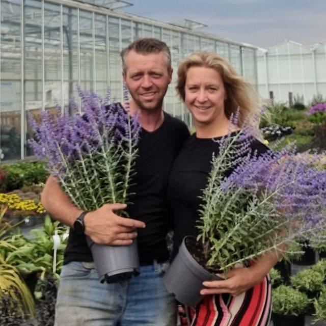

Nursery in IJsselmuiden, NL · since 2021
Strong succulents for your range.
Sempervivum, Perovskia and Hibiscus from our own nursery. Buy through Royal FloraHolland or directly from us.
What we grow
- Sempervivum
- Chick Charms®
- Colorockz®
- Giants
- Perovskia
- Hibiscus
From cutting to customer
into the soil, out of the greenhouseA good root first, the rest follows. Open a step to read more.
-
Our own cuttings
Our succulents start as cuttings we take ourselves.
-
Rooting
Each cutting first gets time to build a strong root system, hence our name.

-
Potting
Pot 12–18 cmThen the plant moves into its final pot.

-
Growing in the greenhouse
6–8 monthsMinerals and fertiliserThe plant grows to full size in our greenhouse in IJsselmuiden.


-
Preparing orders
Once the plant is fully grown, we prepare it for orders.

-
Auction or direct
FloridayDirectWe sell through the Royal FloraHolland auction or directly to the buyer.

-
On the road
Through the auction the plants go into distribution, to Scandinavia, England, Germany and Southern Europe, among others.


Our plants
Sempervivum firstSempervivum is our main product. In season we also grow Perovskia and Hibiscus.

Chick Charms®
Sempervivum in many colours.

Chick Charms® Giants
Chick Charms with extra-large rosettes.

Colorockz®
Sturdy Sempervivum that changes colour with the seasons.

Perovskia
Russian sage with lavender-purple flowers.

Hibiscus
Summer bloomer with large flowers.
Plant photos: Plantipp

Our roots
raised in horticultureStefan and Christel started Roots in 2021. In 2022 they bought the greenhouse on Hartogsweg in IJsselmuiden.
Read our story
Stefan grew up in horticulture: on a 600,000 m² rose nursery and in horticulture in Africa. They started small, but the greenhouse soon filled up. That growth never came at the expense of quality: from the first cutting to the plant on the trolley, they pay attention to every detail.
Stefan
Owner
Day-to-day management, growth, strategy, sales, purchasing and staff.
Christel
Partner
Strategy and bookkeeping.
In the busy months, school students and seasonal workers help us out.
How to buy from us
auction or directThrough the auction
Buy through Royal FloraHolland: you need to be a member, and orders go through Floriday.
Direct
Call or email us to hear what is in the greenhouse right now.
Custom orders
Get in touch for something made to order, for business or private use.
Some of the places our plants go
- ScandinaviaNorth
- EnglandWest
- GermanyEast
- Southern EuropeSouth
Good to know
Can I buy from you as a private customer?
Not usually: most of our customers are trade buyers. Looking for something made to order, privately or for your business? Then get in touch.
How do I buy through the auction?
Our plants are sold through Royal FloraHolland. To buy there you need to be a member. Orders go through Floriday.
When are Perovskia and Hibiscus available?
Perovskia from May to September, Hibiscus in summer. Sempervivum is our main product.
How long do you grow your succulents for?
Six to eight months. We start from our own cuttings and pot them on into a 12 to 18 cm pot.
Where do your plants go?
To buyers in Scandinavia, England, Germany and Southern Europe, among others.
Want to know what's in the greenhouse now?
Call or email us about availability, the auction or custom orders.
- Phone
- +31 6 45 62 84 90
- greenatroots@gmail.com
- Address
- Hartogsweg 18
8271 PE IJsselmuiden
The Netherlands